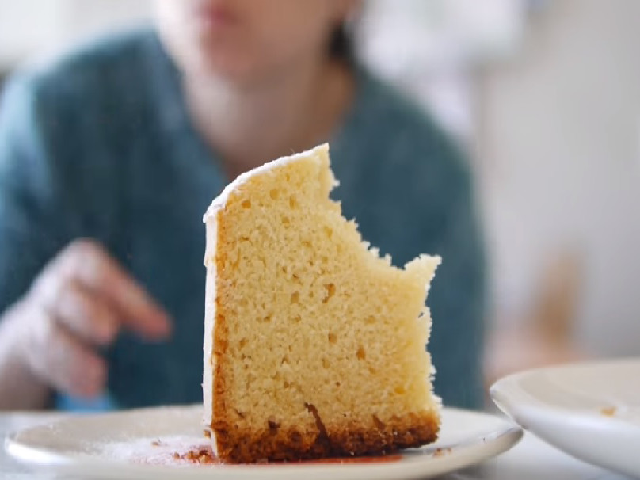

Batimos 3 huevos con el azúcar y luego le ponemos un poquito de aceite. Agregamos unas gotitas de esencia de vainilla y seguimos batiendo. Una vez que esté todo unido dejamos de batir y agregamos 1 taza de harina junto con una cucharadita de polvo para hornear(con un tamiz) Ahora mezclamos pero sin batir sino con movimientos envolventes. Cuando se incorporó todo agregamos otra taza de harina. Ahora enmantecamos y enharinamos el molde. Poner en el horno aprox. por 50 min.
